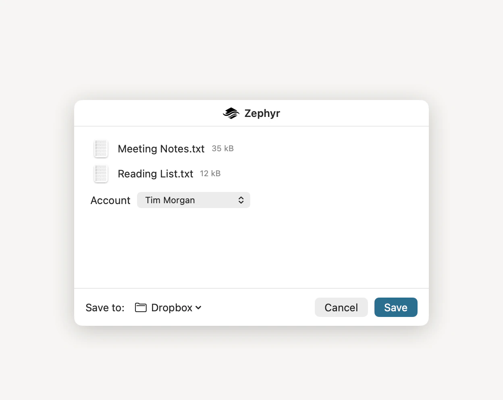

Anywhere macOS offers a Share button, Zephyr is one of the destinations. The file uploads to your Dropbox without you switching to Finder.

In the app you’re using, click the Share button, or choose File ▸ Share.
Choose Zephyr.
Note: If Zephyr isn’t in the list, choose Edit Extensions… at the bottom of the Share menu and turn it on.
Choose where it goes from the Save to menu. It starts at the folder you last sent something to, and offers up to five recent folders alongside Dropbox, the top level of your account.
For anywhere else, choose Other Folder… and type any part of a folder’s name into Filter folders to narrow the list.
If you have more than one account linked, choose which one from the Account menu. With a single account there is nothing to choose, so no menu appears.
Click Save.
The window reports each file as it goes and closes when the last one lands.
Folders. The share sheet takes files only; drag a folder to your Dropbox in the Finder sidebar instead.
Anything shared before you’ve linked an account. The window says so and points you at Zephyr to link one first.
If some of what an app hands over can’t be uploaded, the window lists what it skipped and uploads the rest.
Dragging a file onto your Dropbox in the Finder sidebar does the same thing, takes folders as well, and is usually quicker when Finder is already open.